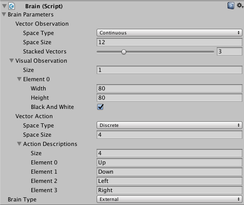
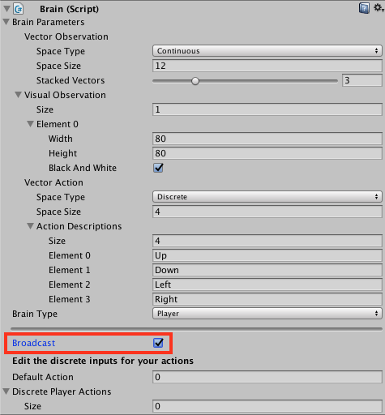

Brains
The Brain encapsulates the decision making process. Brain objects must be children of the Academy in the Unity scene hierarchy. Every Agent must be assigned a Brain, but you can use the same Brain with more than one Agent. You can also create several Brains, attach each of the Brain to one or more than one Agent.
Use the Brain class directly, rather than a subclass. Brain behavior is determined by the Brain Type. ML-Agents defines four Brain Types:
- External — The External and Internal types typically work together; set External when training your agents. You can also use the External brain to communicate with a Python script via the Python
UnityEnvironmentclass included in the Python portion of the ML-Agents SDK. - Internal – Set Internal to make use of a trained model.
- Heuristic – Set Heuristic to hand-code the agent's logic by extending the Decision class.
- Player – Set Player to map keyboard keys to agent actions, which can be useful to test your agent code.
During training, set your agent's brain type to External. To use the trained model, import the model file into the Unity project and change the brain type to Internal.
The Brain class has several important properties that you can set using the Inspector window. These properties must be appropriate for the agents using the brain. For example, the Vector Observation Space Size property must match the length of the feature vector created by an agent exactly. See Agents for information about creating agents and setting up a Brain instance correctly.
Brain Properties
The Brain Inspector window in the Unity Editor displays the properties assigned to a Brain component:

Brain Parameters- Define vector observations, visual observation, and vector actions for the Brain.Vector ObservationSpace Type- Corresponds to whether the observation vector contains a single integer (Discrete) or a series of real-valued floats (Continuous).Space Size- Length of vector observation for brain (In Continuous space type). Or number of possible values (in Discrete space type).Stacked Vectors- The number of previous vector observations that will be stacked and used collectively for decision making. This results in the effective size of the vector observation being passed to the brain being: Space Size x Stacked Vectors.
Visual Observations- Describes height, width, and whether to grayscale visual observations for the Brain.Vector ActionSpace Type- Corresponds to whether action vector contains a single integer (Discrete) or a series of real-valued floats (Continuous).Space Size- Length of action vector for brain (In Continuous state space). Or number of possible values (in Discrete action space).Action Descriptions- A list of strings used to name the available actions for the Brain.
Type of Brain- Describes how the Brain will decide actions.External- Actions are decided by an external process, such as the PPO training process.Internal- Actions are decided using internal TensorFlowSharp model.Player- Actions are decided using keyboard input mappings.Heuristic- Actions are decided using a customDecisionscript, which must be attached to the Brain game object.
Using the Broadcast Feature
The Player, Heuristic and Internal brains have been updated to support broadcast. The broadcast feature allows you to collect data from your agents using a Python program without controlling them.
How to use: Unity
To turn it on in Unity, simply check the Broadcast box as shown bellow:

How to use: Python
When you launch your Unity Environment from a Python program, you can see what the agents connected to non-external brains are doing. When calling step or reset on your environment, you retrieve a dictionary mapping brain names to BrainInfo objects. The dictionary contains a BrainInfo object for each non-external brain set to broadcast as well as for any external brains.
Just like with an external brain, the BrainInfo object contains the fields for visual_observations, vector_observations, text_observations, memories,rewards, local_done, max_reached, agents and previous_actions. Note that previous_actions corresponds to the actions that were taken by the agents at the previous step, not the current one.
Note that when you do a step on the environment, you cannot provide actions for non-external brains. If there are no external brains in the scene, simply call step() with no arguments.
You can use the broadcast feature to collect data generated by Player, Heuristics or Internal brains game sessions. You can then use this data to train an agent in a supervised context.